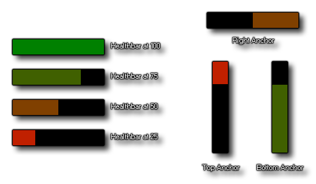

Draw Instance Health Draw Instance Health
Draw Instance Health Draw Instance Health Con esta acción, puede dibujar una barra de color para mostrar una representación gráfica de la variable de instancia health (cuando usa cualquier acción de "salud" en GameMaker Studio 2 la instancia que lo llama tendrá una nueva variable de ámbito de instancia llamada health adicional). La cantidad que se mostrará es un valor porcentual que se encuentra dentro del rango de 0 a 100. Puede establecer el ancla de dirección para dibujar la barra de estado (de izquierda a derecha o de derecha a izquierda y de arriba a abajo o abajo -to-top), así como la posición, ya sea dentro de la sala o relativa a la instancia que llama a la acción. También puede configurar el color que se combinará desde cada una de las cuatro esquinas de la barra de estado, creando degradados de rojo a verde (por ejemplo, pero puede usar cualquier color). A continuación puede ver una imagen de cómo se ve una simple barra de estado con las diferentes opciones: 
NOTA: Esta acción solo se puede usar en los diversos eventos Draw, y no dibujará nada si se usa en otro lugar.
Argumento Descripción Direction La dirección para dibujar los contenidos de la barra de estado Left La posición del lado izquierdo de la barra de estado Top La posición de la parte superior de la barra de estado Right La posición del lado derecho de la barra de estado Bottom La posición de la parte inferior de la barra de estado Background El color para dibujar como fondo en la barra de estado Outline El color a usar para delinear la barra de estado Min Colour El color para mezclar desde el valor mínimo Max Colour El color para mezclar desde el valor máximo
El código de bloque de acción anterior dibuja una barra de estado en la parte superior izquierda de la pantalla.